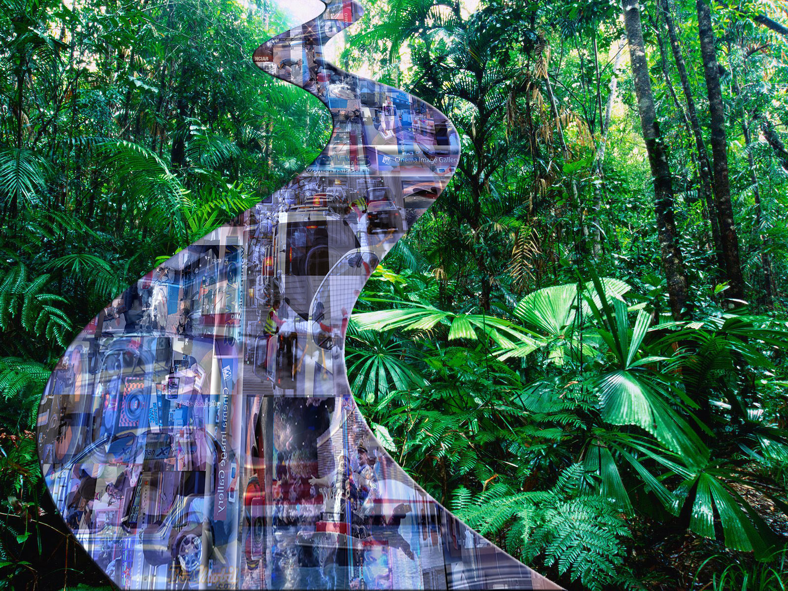
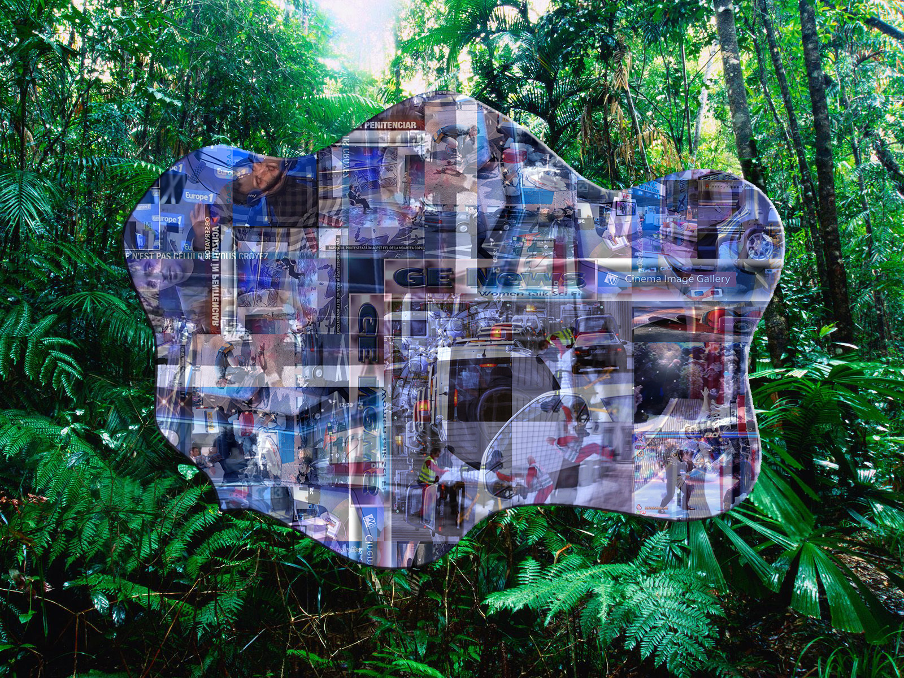
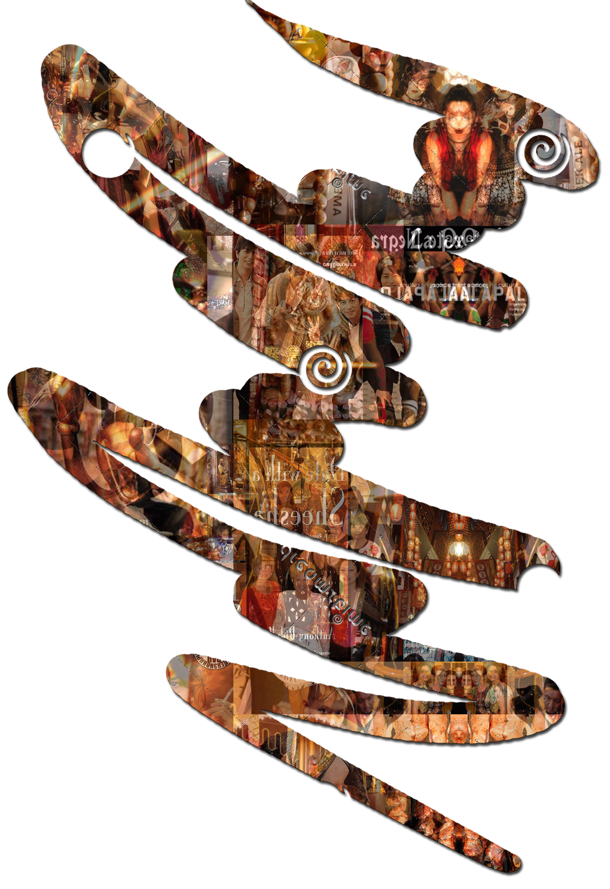

Loop to annoy Andy McTaggart
---------------
Through the forest we row, following the river's flow
Now, a pond in the rainforest
-------------------
Music created from the sound of organ pipes blown during workshops celebrating the restoration of Colchester's Moot Hall Organ. It was used to stimulate visual responses from the children.
-------------------
Browsing Music - Blue (2015)
Demonstration of a MaxMSP programme through which the use of laptop trackpad and keyboard activates a sound environment. This sound environment is called 'Blue'. 'Grey' and 'Red' sound environments were also composed.
-------------------
Steady Feening for Disklavier (with accompanying image) (2013) - Performerless pianos offer irresistable opportunities for ridiculousness
-------------------
Three excerpts from music composed for theatre. The play 'Sleepwalk' depicted an intense altercation on a London bus.
-------------------
An excerpt from music composed for theatre. The play 'Hidden' explored experiences of dyspraxia and was workshopped by the Mercury Theatre's group for people with physical disabilities.